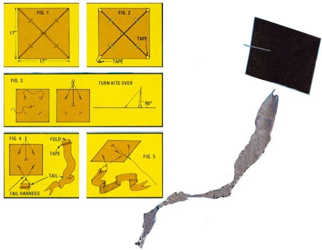

Not long ago, I sat down to design an ecologically sound, aesthetically satisfying recycled kite in honor of my favorite magazine.
And here it is! A fine, easy-to-make, guaranteed-to-fly little treasure that will soon banish whatever "kite failure" inhibitions you may have. Better yet-except for a l4 cents dowel and a little tape- MOTHER'S kite is constructed entirely from recycled materials ... and you can make this high-flyer in less than half an hour!
Now, I know that a grocery-bag-and-newspaper plaything may not seem very exciting or beautiful while you're puttin' it together ... but-once you get it up in the sky-MOTHER'S kite will certainly "outshine" many more colorful and expensive models.
Here's all you need: 1 large grocery bag (about 17" deep), a 3/16" dowel (4' long), cotton string for the bridle, masking or strapping tape, newspaper for a tail, and glue (or more tape) to fasten the paper together. (A large-sized bag produces a 17" square with a 24" diagonal . . . which means that just one 4' dowel will make a kite. MOTHER'S flyer can also be scaled larger-up to 24"-or smaller: down to 15" with 1/8" dowel.) Finally, as for tools, you'll need scissors, a ruler, and a pencil.
Now . . . here's how to proceed:
STEP 1: Cut down the seam of the paper bag and remove the sack's bottom. Then, spread the bag flat and measure off a 17" square. This can be done by folding the corner diagonally up to the top edge ... but don't crease the paper.
STEP 2: Cut out the square (this is the back of the kite as seen in Fig. 1) and make the dots as illustrated. Position these marks halfway between the corners of the kite and its center.
STEP 3: Reinforce the dots with strips of tape (Fig. 2).
STEP 4: Cut your dowel into spars that fit from corner to corner. Lay them in place and tape the ends so the strips of adhesive lap over the corners and around to the front of the kite (Fig. 2).
Strapping tape is great for this job, but other types will do.
STEP 5: Poke a hole through each of the dots and turn the kite over.
STEP 6: Cut a 20" and a 12" length of bridle string. Tie the ends of the 20" string through the holes and over the spars at the "top" of the square (Fig. 3). Then, tie one end of the 12" length around the intersection of the spars at the center. With that done, find the midpoint of the upper string and tie a loop in it. Next, run the string which comes from the center of the kite through this loop, pull it up until the plane formed by the top string is perpendicular to the face of the kite (Fig. 3), and knot the bridle together.
STEP 7: Cut a 22" section of string to make a tail harness. Then, tie the ends of this cord through the "bottom" holes and over the spars ... and knot a loop in the middle of the string (Fig. 4).
STEP 8: Your kite's tail should be made of 7" -wide strips, cut across the 24" width of the newspaper. (You can slice several sheets at a time.) Glue the strips end to end, using as many as 10 for a l7"-long kite. IMPORTANT: Crumple and smooth out the finished tail at least three times to soften the newspaper, then attach the appendage as shown in Fig. 4. (You can wrap the tail around the kite for easy transportation and storage.)
Now, simply fasten your kite's flying string (strong crochet thread will work fine in slight breezes, and braided fishing line is the top choice for especially blustery days) to the bridle loop-Fig. 5-and just watch the recycled flyer dance on the winds!
EDITOR'S NOTE: Ms. Greger's booh of kites. Blown Sky-High, is available (for $4.50) from the author. Address all orders to Margaret Greger, 1425 Marshall Avenue, Richland, Washington 99352. Another valuable source of kiting plans and information is Twenty-Five Kites That Fly by Leslie L. Hunt, which can be obtained from most bookstores or-for $1.25 plus 95 cents postage and handling- from Mother's Bookshelf, P.O. Box 70, Henderson-vllle, North Carolina 26739.
|
 DIAGRAMS BY PIERR MORGAN LEITZ PHOTO BY GEORGE GREGER |
|
|